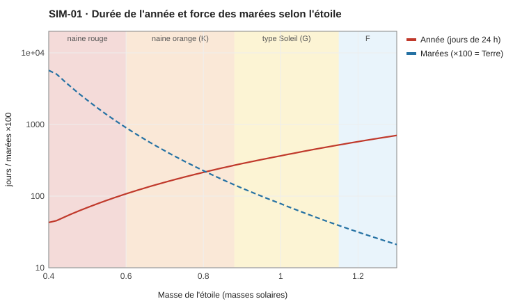
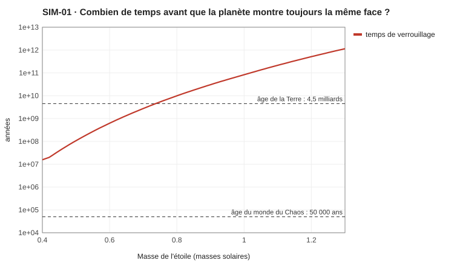
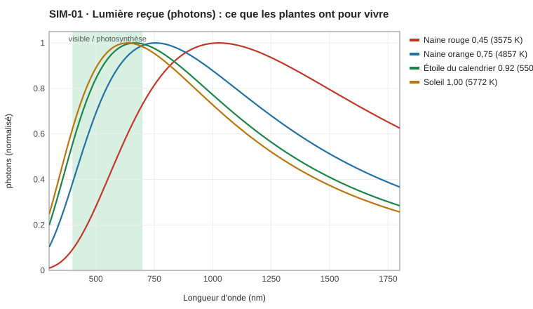

SIM-01 — Le système stellaire
Les dates de l'auteur (−50 000, C-12) sont en années du calendrier. Le monde a donc ≈ 44 000 ans terrestres aujourd'hui (53 097 ans du calendrier × 0,83) (corrigé : C-194), et l'horizon du ciel est à ≈ 44 000 années-lumière (C-25 corrigé, règle C-159).
La première version supposait 12 mois par an. Le Calendrier (document original) en compte 10 de 30 jours, ce qui donne une année d'environ 302 jours. Cette contrainte fixe l'étoile : la question « soleil orange ou type Soleil » est tranchée par ton propre calendrier. Le soleil orange reste plus bas, pour comparaison.
Question. Autour de quelle étoile tourne le monde du Chaos, et qu'est-ce que ça change ?
Méthode. Le script sim01_systeme.py balaye 91 étoiles de la séquence principale (de 0,40 à 1,30 masse solaire). Pour chacune, il place la planète là où sa température moyenne vaut 15 °C, puis il applique les contraintes de tes textes :
- 10 mois lunaires par an (PLA-006 Calendrier et saisons) ;
- des marées et une pleine lune (Nyara, « à chaque pleine lune », Géographie - Sera) ;
- une surface proche de la Terre : les terres connues font ≈ 26 M km², soit environ 5 % (PLA-005 Géographie corrigée). Ça donne un rayon d'environ 6 430 km et une gravité de 1,02 g.
Le script cherche ensuite l'étoile qui donne exactement une année de 302,25 jours.
- Relations masse–luminosité de la séquence principale (L ≈ M⁴).
- Zone habitable : Kopparapu et al., 2013.
- Lois de Kepler ; stabilité d'une lune : moins de 0,49 rayon de Hill (Domingos et al., 2006).
- Marées : elles varient comme la masse divisée par la distance au cube.
- Verrouillage par marée : Gladman et al., 1996.
- Spectre : loi de Planck.
Résultats

1. L'étoile du calendrier : 0,92 masse solaire.
| Valeur | |
|---|---|
| Température, couleur | 5 500 K, jaune d'or |
| Orbite | 0,86 unité astronomique (la Terre : 1) |
| Année | 302 jours de 24 h |
| Mois lunaire | 30,2 jours |
| Distance de la lune | 384 600 km, presque exactement celle de notre Lune |
| Taille du soleil dans le ciel | 0,58° (le nôtre : 0,53°) |
| Âges | 70 ans terrestres = 85 ans locaux |
2. La lune est toujours stable. Le nombre de mois par an fixe le rapport entre l'orbite de la lune et sa zone de stabilité : 29 % avec 10 mois (notre Lune : 26 %), quelle que soit l'étoile. C'est une conséquence mathématique des lois de Kepler.
3. Les naines rouges sont exclues. Autour d'une étoile de 0,45 masse solaire, la marée de l'étoile seule vaudrait 46 fois la marée solaire terrestre. Avec de telles marées, pas de deltas, de rizières ou de ports.

4. Ton univers jeune change les règles. Dans notre univers, une planète proche d'une naine rouge finit par montrer toujours la même face à son étoile (en 39 millions d'années). Ton monde n'a que 50 000 ans : rien n'a eu le temps de se bloquer. Ça ne sauve pas les naines rouges, mais ça peut servir ailleurs, par exemple pour une autre planète.

5. Comparaison
| Soleil orange (0,75) | Étoile du calendrier (0,92) | Soleil (1,00) | |
|---|---|---|---|
| Année (10 mois) | 184 jours | 302 jours | 365 jours |
| Mois lunaire | 18,4 jours | 30,2 jours | 36,5 jours |
| Taille du soleil | 0,74° | 0,58° | 0,53° |
| Marées (lune comme la nôtre) | × 3,1 | × 1,1 | × 0,8 |
| Photons utiles aux plantes | 0,16 | 0,21 | 0,23 |
| 70 ans terrestres = | 139 ans locaux | 85 ans locaux | 70 ans locaux |
Proposition : la Grande Lune
Avec ton calendrier, l'étoile est fixée, mais la taille de la lune est libre. Or c'est elle qui porte la dark fantasy. Je propose une lune plus grosse que la nôtre, d'environ 2 400 km de rayon. C'est un peu moins que Ganymède, la plus grosse lune du Système solaire (2 634 km) ; elle aurait 1/31 de la masse de la planète.
| Rayon de la lune | Taille dans le ciel | Éclipses | Marées |
|---|---|---|---|
| 1 737 km (la nôtre) | 0,52°, plus petite que le soleil | surtout annulaires (un anneau de feu reste visible) | × 1,1 |
| 2 400 km | 0,71°, une fois et demie la nôtre | toujours totales : les « soleils noirs » | × 2,3 |
| 2 600 km | 0,77° | toujours totales | × 2,8 |
Avec la Grande Lune :
- Les soleils noirs. Chaque éclipse est totale et plus longue que les nôtres. Tes « soleils noirs » (Nyara) ont une explication naturelle, et le culte d'Iahet, déesse de la lune (Panthéon (document original)), ses grandes dates.
- Des marées 2,3 fois les nôtres. Dans une baie en entonnoir comme la baie de Fundy (16 m sur Terre), on atteint 35 m. Chaque grande marée pousse une vague qui remonte les fleuves (un mascaret, comme celui du Qiantang en Chine, qui fait déjà 9 m). Le delta de Naora aurait la sienne.
- Une date fixe pour la terreur. La pleine lune tombe toujours le 15 du mois (PLA-006 Calendrier et saisons). Les morts de Nyara sortent donc le 15, chaque mois. La marée qui transporte le Chaos est testée dans SIM-05 Transport du Chaos.
- Une lune qui domine le ciel nocturne, nettement plus grande et plus brillante que la nôtre.
Questions ouvertes
La Grande Lune: adoptée (carte blanche de l'auteur sur le calendrier et la météo), rayon ≈ 2 400 km.- La durée du jour : 24 h, comme dans ton calendrier.
- Les anciennes contraintes C-12 (−50 000) et C-25 (horizon du ciel) sont-elles en ans locaux ? Si oui, le monde a ≈ 41 000 ans terrestres et l'horizon fait ≈ 44 000 années-lumière (PLA-002 Le ciel et les étoiles).
Historique
- 2026-11-02 : création ; 91 étoiles simulées, soleil orange recommandé (hypothèse de 12 mois).
- 2026-11-02 : refait avec le calendrier de l'auteur (10 mois) : étoile de 0,92 masse solaire ; proposition de la Grande Lune.